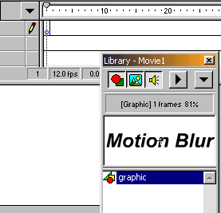
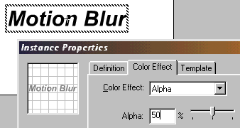

Creating Blur


 Downloadable
FLA
Downloadable
FLA
Blur is a much wanted feature in Flash. It is not easy to create a 100% blur effect, but there are two ways of creating "pseudo" blur. They're explained here:
Motion Blur:
Step 1. Create the symbol you want to blur by pressing F8 and drawing.
Step 2. Drag this symbol into your scene by pressing CTRL + L to show your library, and then dragging the specified symbol into your scene.

Step 3. Doubleclick this symbol, or click properties.
Step 4. Select "Color Effect", choose "Alpha" and set the transparency to 50%.

Step 5. Copy the symbol by selecting it and pressing CTRL + C.
Step 6. Paste the symbol "In Place" (above the other symbol). (Do not unselect!)
Step 7. By using the arrow keys, move the symbol you just pasted, in the direction you wish the symbol to be blurred. That's the motion blur effect.
Squint:
Step 1. Repeat steps 1 - 6 for "motion blur".
Step 2. Instead of moving the symbol with the arrow keys, press CTRL + ALT + S to scale the symbol.
Step 3. Scale the symbol to about 105 - 108%. Now you have a squint effect. (Works best, if you use this process for EACH of the letters, if it's in a text.
Tip: If the newly created blurred symbol is going to be a logo, or something equal, it is best if you Group the two symbols by pressing CTRL + G. You might even make them into a new symbol.
Voila!